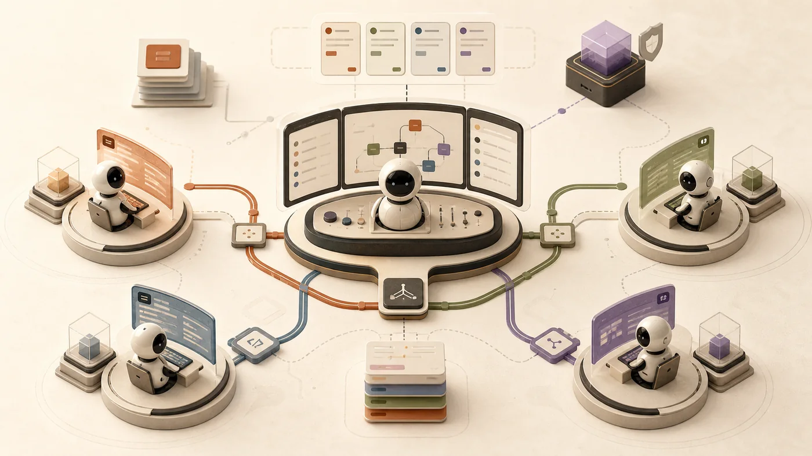
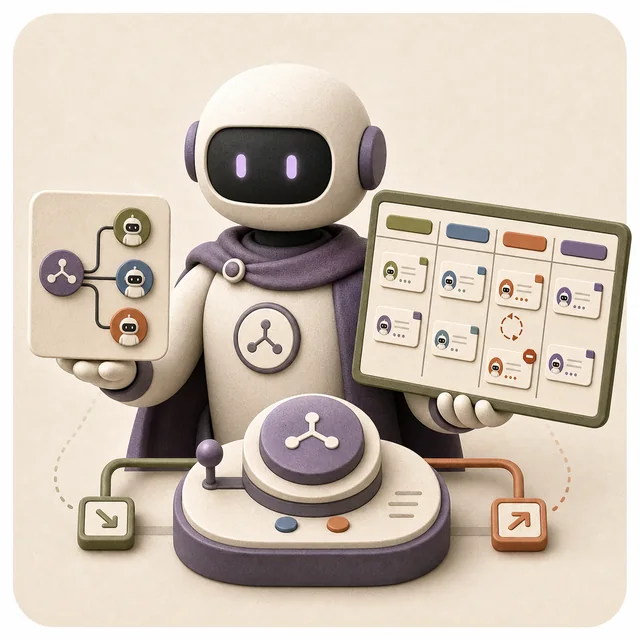

AI 团队怎么组
多智能体协作其实就是带团队——七个常见坑、四种工具性格、一份交办模板，看完就能用。
多智能体协作，不是「雇更多人」，而是「带好一支团队」。
抖音小红书上常这么演：一个 AI 查资料，一个 AI 写代码，一个 AI 跑测试，最后主 AI 像项目经理一样把结果收上来。看着很酷。
但真做过的人知道：人多 ≠ 效率高。一个混乱的团队，加更多人只会更混乱。多智能体真正的难点，从来不是「再开一个 AI」，而是分工、授权、信息同步和最后谁拍板。

单 AI vs 多 AI · 用厨房理解一下
想象你开了一家餐厅。「单 AI」就是一个全能厨子——他炒菜、切配、洗碗、收银全干。「多 AI」就是一组分工的团队——主厨、切配、备料、出餐各司其职。
「人多力量大」
有事就拆任务。开 10 个 AI 一起做，速度肯定快。
结果：
• 10 个人挤在小厨房里互相撞
• 没人知道菜单上「同一桌客人」是谁
• 两个人同时炒了同一道菜
•
老板出去送外卖了，没人收钱
「分工要先于人数」
先想清楚：
• 谁负责接单（路由）
• 谁能动哪个灶台（权限）
• 谁负责出餐前确认（收口）
• 出错了谁兜底（恢复）
这些想清楚，才决定开几个工位。
先回答两个问题
所有多 AI 系统都在回答这两件事。把它们想清楚，剩下的就是细节。
什么时候叫人帮忙？
叫做 「触发」。一个 AI 单干够不够？什么时候才该拆？
- 你叫我才动 — 用户明确说「请并行处理」
- 看任务自己判断 — 主 AI 读到「这事得安全审查」，自动叫安全员
- 看来源决定 — 消息从公司群进来，找客服员；从家人群进来，找家政助手
- 排队等 — 任务先写进待办板，有人路过就拉一个出来做
叫来了怎么组织？
叫做 「拓扑」。是上下级关系？流水线？还是围成一桌头脑风暴？
- 主 + 直接下属 — 最常见，老板派活，员工各自做
- 流水线 — A 做完 B 接着做，强顺序
- 圆桌讨论 — 大家互相挑战、互相补刀
- 前台分诊 — 不同人从不同门进来，去找不同的人
六种团队结构 · 选错了再多人也救不了
不同的任务适合不同的「队形」。下面六种，找到和你场景最像的那个就行。
四款工具 · 四种「团队风格」
同样叫多智能体，但 Codex、Claude Code、OpenClaw、Hermes 的「管理哲学」完全不同。把它们想象成四种性格不同的项目经理。

七种翻车现场 · 你大概率踩过其中一种
这些不是理论上的失败，而是真实项目里反复发生的事。哪怕没做过多 agent 系统，把它们当成「带团队最容易犯的错」也成立。
决策清单 · 加 AI 前先问这八个问题
按顺序问。能在第 1 题就停下，就别走到第 8 题。
交办模板 · 像给实习生写工作交接
这是整篇文章最值得抄走的东西。下次让 AI 帮你做事，按这八条说，效果会立刻不一样。
把 AI 当新同事
想象你周一上班，把活交给一个刚入职的实习生——他啥都不知道。下面这八条都得写清楚。
- ① 角色「你是只读 explorer」「你是局部 worker」
- ② 目标到底要回答什么、做出什么
- ③ 背景项目路径、相关文件、报错截图
- ④ 能做什么能读哪些文件，能不能跑命令
- ⑤ 负责范围只能改哪个目录
- ⑥ 禁止事项不要改 X，不要重构 Y
- ⑦ 输出格式要 diff、要表格、还是要摘要
- ⑧ 何时收工满足什么条件算完成，遇到什么情况要停下来报告
角色（Role）： 你是 [只读 explorer / 局部 worker / 安全 reviewer] 目标（Goal）： 完成什么 / 回答什么，边界是什么。 背景（Context）： 项目路径： 相关文件： 错误现场： 已有判断： 可以做（Allowed）： 能读： 能跑： 能写：[或注明只读] 负责范围（Ownership）： 只能写：[目录或文件] 禁止事项（Forbidden）： 不要改 … 不要重构 … 不要继续 spawn 更多 agent 输出格式（Output Format）： 返回 [diff / 摘要 / 表格 / patch] 何时收工（Stop Condition）： 完成条件： 遇到阻塞时：
先设计边界，再增加 AI 数量。
多智能体协作不是越多越好，也不是越自动越好。真正的生产力飞跃，来自把正确的问题交给正确的 AI，在正确的边界内执行，并由清晰的责任人收口。
这听起来不性感，但它就是真实世界里能跑下去的方式。
一个 AI 做不好的事，多个 AI 只会做得更糟糕——除非你先把团队规则写清楚。
原文：@Russell3402 · 多智能体协作调查。本文为基于原帖的小白向重构与可视化整理。